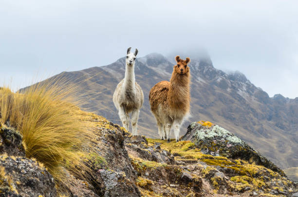

Sobre ViajesAlanya

Nuestra Pasión es Perú
En ViajesAlanya, nos dedicamos a crear viajes que conectan con la esencia de nuestra tierra. Desde la majestuosidad de Machu Picchu hasta la misteriosa Amazonía, te llevamos a conocer los tesoros de Perú de una manera auténtica y segura.
Fundada en 2010 por un grupo de guías locales apasionados, nuestra misión es ofrecer experiencias de viaje personalizadas que superen las expectativas. Creemos en el turismo sostenible y trabajamos en estrecha colaboración con las comunidades locales para asegurar que nuestros viajes tengan un impacto positivo.